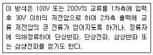
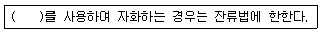
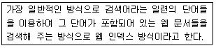
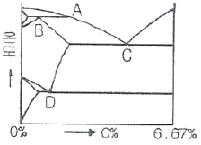

자기비파괴검사기사(구) (2008-07-27 기출문제)
1과목: 자기탐상시험원리
1. 다음 중 자분탐상시험시 동일 조건하에서 표면 아래 측정 가능한 깊은 곳까지 결함을 가장 잘 검출할 수 있는 자화전류와 분산매로 조합된 것은?
- 교류, 습식
- 교류, 건식
- 직류, 습식
- 직류, 건식
(정답률: 알수없음)

2. 다음 각 재료의 자분탐상시험시 자분과 분산매의 조합이 부적합한 경우는?
- 기어의 표면 경화부분 - 비형광, 건식
- Hole 내부 및 나사부 - 형광, 습식
- 강교(鋼橋)의 용접부 - 비형광, 습식
- 탱크 내부의 용접부 - 형광, 습식
(정답률: 알수없음)
3. 자극의 단면이 25mm x 25mm 인 극간식 자분탐상장치의 전자속을 측정하였더니 0.625mWb 이었다. 자속밀도는 몇 Tesla 가 되는가?
- 1
- 2
- 4
- 10
(정답률: 알수없음)
4. 가로 31.75mm, 세로 60.45mm, 길이 103.12mm인 강자성체를 직류 통전법(Head shot)에 의하여 자화할 때 요구되는 최소 자화전류는 약 몇 A 인가?
- 1160
- 2380
- 4690
- 7260
(정답률: 알수없음)
5. 표피효과의 영향으로 인하여 시험체의 표층부 이외에는 자화가 어려운 전류 형태는?
- 직류(直流)
- 교류(交流)
- 맥류(脈流)
- 전류(轉流)
(정답률: 알수없음)
6. 반경 r 인 원형 코일에 I 의 전류가 흐를 때 코일의 중심점에서의 자계의 세기에 대한 설명으로 옳은 것은?
- I 에 비례하고, r 에 비례한다.
- I 에 비례하고, r 에 반비례한다.
- I 에 반비례하고, r 에 비례한다.
- I 에 반비례하고, r 에 반비례한다.
(정답률: 알수없음)
7. 다음 누설시험 방법 중 가장 감도가 우수한 것은?
- 기포누설시험
- 헬륨누설시험
- 할로겐누설시험
- 암모니아누설시험
(정답률: 알수없음)
8. 누설시험의 목적을 가장 옳게 설명한 것은?
- 제품의 표면결함을 검출
- 용접부 내부결함의 크기와 위치를 파악
- 제품이 조기에 파손되는 것을 방지하고 제품의 신뢰성을 확보
- 강자성체 용접부에서 결함으로부터 야기되는 누설 자속을 측정하여 파악
(정답률: 알수없음)
9. 다음 중 초음파탐상시험의 장점이 아닌 것은?
- 결함으로부터의 지시를 곧바로 얻을 수 있다.
- 시험체의 한 면만을 이용하여 결함을 측정할 수 있다.
- 내부조직의 입도가 크고 기포가 많은 부품 등의 탐상에 유용하다.
- 침투력이 매우 높아 두꺼운 단면을 갖는 부품의 깊은 곳에 있는 결함도 용이하게 검출한다.
(정답률: 알수없음)
10. 방사선투과시험에서 현상액의 온도가 규격에 화씨(℉)로 되어 있어 섭씨온도로 변환시켜 측정된 값과 비교하고자 한다. 다음 중 화씨온도(℉)를 섭씨온도(℃)로 변환하는 식으로 옳은 것은?
- ℃ = 5/9 x (℉ - 32)
- ℃ = (℉ x 5/9 ) + 32
- ℃ = (℉ x 5/9 ) + 460
- ℃ = (℉ x 5/9 ) + 460
(정답률: 알수없음)
11. 철강재를 용접하여 일정시간 경과 후 표면 및 표면직하에 결함이 있는지를 검출하기 위한 경제적이고 손쉬운 비파괴검사법은?
- 방사선투과검사
- 초음파탐상검사
- 자분탐상검사
- 와전류탐상검사
(정답률: 알수없음)
12. 다음 중 금속의 용접부위에 대한 체적형 내부 결함검출에 가장 효과적인 비파괴검사법은?
- 방사선투과시험
- 자분탐상시험
- 침투탐상시험
- 와전류탐상시험
(정답률: 알수없음)
13. 시험체의 표면 근처에 불연속 또는 구조의 변화가 있으면 온도구배에 의해 전압이 발생하며 이를 전위차계로 검사하는 방법으로서 불연소, 편석, 열전 특성을 측정할 수 있는 비파괴검사법은?
- 열적 검사법
- 화학분석 검사법
- 방사선투과 검사법
- 음파-초음파 검사법
(정답률: 알수없음)
14. 다음은 자분탐상시험의 자화 전류를 발생시키는 자화전언부의 어떤 형식을 설명한 것이다. 이에 해당하는 형식으로 옳은 것은?

- 축전기 방전식
- 강압 변압기식
- 강압 정류식
- One-Pulse 통전식
(정답률: 알수없음)
15. 초음파의 특성에 대한 설명 중 잘못된 것은?
- 지향성이 좋다.
- 진행거리가 비교적 길다.
- 동일 매질 내에서 속도가 일정하다.
- 전파와 같이 진공 중에서도 진행한다.
(정답률: 알수없음)
16. 다음 중 수세성 형광침투탐상시험의 특징으로 볼 수 없는 것은?
- 표면의 얕고, 가느다란 홈의 탐상이 어렵다.
- 열쇠구멍이나 나사부분의 탐상이 가능하다.
- 수분이 있으면 침투액의 성능이 현저히 떨어진다.
- 사용하기가 불편하지만 넓은 면적을 단 한 번의 조작으로 탐상이 가능하다.
(정답률: 알수없음)
17. 침투탐상시험 중 다른 탐상 방법에 비해 미세한 결함에 가장 감도가 높은 것은?
- 수세성 형광침투탐상시험
- 후유화성 형광침투탐상시험
- 용제제거성 염색침투탐상시험
- 용제제거성 형광침투탐상시험
(정답률: 알수없음)
18. 다음 중 다른 비파괴시험과 비교할 때 와전류탐상시험의 장점으로 볼 수 없는 것은?
- 결함탐상 및 재질검사 등 여러 데이터를 동시에 얻을 수 있다.
- 표면으로부터 깊은 내부결함의 검출은 곤란하지만, 표면결함의 검출에 뛰어나다.
- 고온에서의 탐상을 수행할 수 있고, 가는 선, 내부 구멍 등의 검사를 수행할 수 있다.
- 지시는 분석이 용이한 실물과 같은 형태로 직접 볼 수 있으며, 크기와 위치를 정확히 알 수 있다.
(정답률: 알수없음)
19. 와전류탐상시험에서 탐상 코일의 임피던스에 영향을 미치는 인자로 가장 거리가 먼 것은?
- 시험체의 전도도
- 시험체의 투자율
- 시험체의 보자력
- 시험체의 형상과 치수
(정답률: 알수없음)
20. 다음 중 비파괴검사법으로 측정 및 평가할 수 없는 것은?
- 시험체의 구조
- 재료의 충격 시험치
- 시험체 내의 결함
- 시험체의 계속 사용 여부
(정답률: 알수없음)
2과목: 자기탐상검사
21. 자분탐상검사에 적합한 강자성 재료로만 조합된 것은?
- 철(Fe), 니켈(Ni), 주석(Sn)
- 철(Fe), 니켈(Ni), 코발트(Co)
- 철(Fe), 알루미늄(Al), 구리(Cu)
- 철(Fe), 코발트(Co), 알루미늄(Al)
(정답률: 알수없음)
22. 자분탐상검사의 장비 중에 가우스미터(Gauss meter)에 대한 설명으로 옳은 것은?
- 자계 방향과 크기를 측정하는 것이다.
- 국부적인 공간의 자계나 누설 자속밀도를 측정하는 것이다.
- 탈자여부 조사장치이며, 얇은 금속판에 구리를 입혀 인공흠을 가공한 것이다.
- 결함 부위에 발생한 자속의 정밀 측정장비로서 결함의 크기를 정확히 나타낼 수 있는 것이다.
(정답률: 알수없음)
23. 직경 50mm, 길이 150mm 인 봉을 코일법으로 자분탐상검사할 때 장비의 최대 전류가 3000A 라면 검사체에 몇 회의 코일을 감아야 하는가?
- 3회
- 4회
- 5회
- 6회
(정답률: 알수없음)
24. 나타난 자분모양이 결함인지 의사모양인지 불분명 할 때 취해야 하는 조치로 가장 적절한 것은?
- 어닐링 열처리한 후 재검사한다.
- 표면을 그라인딩한 후 재검사한다.
- 의사모양이 나타나지 않는 다른 검사법으로 재확인하고 그래도 불분명하면 결함으로 간주한다.
- 의사모양으로 결정하고 추후 가동 중에 수시로 재검사를 실시하여 진행 여부를 관찰한다.
(정답률: 알수없음)
25. 다음 중 대형 주조물의 결함을 검출할 수 있는 가장 효율적인 방법은?
- 자계가 불연속에 대해 평행하도록 전류를 통한다.
- 주조물의 한 쪽 끝에서 중심까지 전류를 보낸다.
- 1회에 6 ~ 8인치 간격으로 프로드를 접촉시키고 전류를 통한다.
- 강한 자계가 검사를 방해하지 않도록 투자율을 0(zero)에 가깝게 낮춘다.
(정답률: 알수없음)
26. 자분탐상검사에 대한 다음 설명 중 틀린 것은?
- 자력선은 N극에서 S극으로 흐른다.
- 자분모양을 탐상면에 그대로 고정시키고 싶을 때는 자기테이프의 전사법을 사용한다.
- 자기펜 흔적은 자화된 검사체끼리 서로 접촉되었을 경우에 생기는 의사모양의 하나이다.
- 투자율이 다른 재질의 경계에는 자계의 세기를 약하게 하여도 의사모양이 나타날 수 있다.
(정답률: 알수없음)
27. 백등유를 분산매로 사용하는 습식 자분탐상검사에서 후처리를 할 때 가장 적합한 것은?
- 물(Water)
- 용제(Solvent)
- 에칭(Etching)dor
- 가솔린(Gasoline)
(정답률: 알수없음)
28. 자분탐상검사 후 시험체에 자극이 있는지 여부를 알기 위하여 간이형 자장지시계를 사용할 때 가장 관계가 깊은 인자는?
- 유도성
- 투과성
- 자력선수
- 잔류자기
(정답률: 알수없음)
29. 용접부를 프로드법으로 검사하고자 할 때 다음 설명 중 옳은 것은?
- 극간법에 비하여 감도가 떨어진다.
- 프로드 간격은 항상 일정하게 유지해야 한다.
- 건식자분을 사용하면 표면직하 불연속에 대해 감도가 나쁘다.
- 프로드의 탈착은 반드시 통전하고 있는 상태에서 행위가 이루어져야 한다.
(정답률: 알수없음)
30. 실효투자율(Effective permeability)에 대하여 설명한 것으로 틀린 것은?
- 검사체의 형태에 따라 달라지지 않는다.
- 검사체의 전도율, 투자율 및 시험주파수에 따라 달라진다.
- 검사재질의 고유 성질에 의해서만 정해지지는 않는다.
- 코일법과 같은 선형자계 적용시에 중요한 고려사항이다.
(정답률: 알수없음)
31. 누설자속탐상검사의 장점을 자분탐상검사와 비교 했을 때의 설명으로 틀린 것은?
- 자동화가 가능하다.
- 고속 주사가 가능하다.
- 결함의 정량 측정이 가능하다.
- 검출 한계의 결함깊이가 작다.
(정답률: 알수없음)
32. 시험체의 구멍에 철심을 통과시키고 이 철심에 교 류자속을 흐르게 하여 시험체의 구멍 등 주위에 원주 방향의 유도전류를 발생시켜 그 전류가 만드는 자계에 의해서 시험체를 자화시키는 방법을 무엇이라 하는가?
- 극간법
- 코일법
- 전류관통법
- 자속관통법
(정답률: 알수없음)
33. 다음 중 강괴가 압연과정으로 강판이 될 때 강괴에 들어 있는 기공이나 불순물 같은 결함들이 내부의 외부 면과 평행하게 되어 존재하는 결함을 무엇이라 하는가?
- 파이프(Pipe)
- 개재물(Inclusion)
- 편석(Segregation)
- 라미네이션(Lamination)
(정답률: 알수없음)
34. 습식자분에 사용되는 강자성체 분말의 크기로 적합한 것은?
- 0.01 ~ 0.1㎛
- 0.2 ~ 60㎛
- 70 ~ 90㎛
- 100 ~ 600㎛
(정답률: 알수없음)
35. 자분이 갖추어야 할 자기적 성질로 옳은 것은?
- 높은 투자율, 높은 보자력
- 낮은 투자율, 낮은 보자력
- 높은 투자율, 낮은 보자력
- 낮은 투자율, 높은 보자력
(정답률: 알수없음)
36. 위상이 120도씩 서로 다른 삼상교류의 각 상을 반파정류하여 자화전류로 만들어, 1회의 조작으로 방향이 서로 다른 자계가 동시에 시험체에 걸리도록 한 특수자분탐상 장치는?
- 회전자계에 의한 방식
- 듀오백법에 의한 방식
- 진동자계에 의한 방식
- 브릿지법에 의한 방식
(정답률: 알수없음)
37. 다음 중 육안으로 검사하기 힘든 좁고 깊은 구멍의 내면 및 구석진 곳까지도 자분탐상하기에 적합한 방법은?
- 홀소자법
- 자화고무법
- 누설자속탐상법
- 자기다이오드법
(정답률: 알수없음)
38. 다음 중 자분탐상검사의 적용에 관한 설명으로 틀린 것은?
- 강판의 검사에는 일반적으로 프로드법, 요크법 등이 적용된다.
- 봉강의 검사에는 일반적으로 축통전법이 적용되며, 필요시 극간법도 적용될 수 있다.
- 강관의 검사에는 축통전법, 전류관통법 등이 널리 이용된다.
- 평판 용접부의 검사에는 전류관통법, 프로드법, 요크법 등이 적용된다.
(정답률: 알수없음)
39. 통전법으로 자분탐상검사를 수행할 경우 자화전류는 직류나 정류 전류가 사용되며, 자화전류 값은 일반적으로 외경에 따라 달라진다. 외경이 178mm(7인치)일 경우 다음 중 자화전류로 가장 적당한 것은?
- 700A
- 2100A
- 2800A
- 4000A
(정답률: 알수없음)
40. 다음 중 강 용접부에서 발생되는 수소취성균열(hydrogen induced crack)을 방지하기 위한 대책으로 볼 수 없는 것은?
- 적절한 후열처리를 한다.
- 적절한 예열온도를 유지한다.
- 용접봉을 적절하게 건조하여 사용한다.
- 저수소계 용접봉을 사용한다.
(정답률: 알수없음)
3과목: 자기탐상관련규격및컴퓨터활용
41. 보일러 및 압력용기에 대한 자분탐상검사(ASME Sec.V, Art.7)에 따라 백색광 및 형광의 측정을 위한 조도계는 수리되었을 때마다 교정을 실시하여야 하며 또한 최대 얼마의 기간마다 교정을 실시하여야 하는 가?
- 1개월
- 6개월
- 1년
- 2년
(정답률: 알수없음)
42. 철강 재료의 자분탐상 시험방법 및 자분모양의 분류(KS D 0213)에서 표준시험편에 관한 내용 중 틀린것은?
- A형 표준시험편의 자분 적용은 연속법으로 한다.
- C형 표준시험편의 자분 적용은 연속법으로 한다.
- B형 대비시험편은 장치, 자분의 성능평가에 이용된다.
- C형 표준시험편은 B형 대비시험편의 적용이 곤란한 경우 사용된다.
(정답률: 알수없음)
43. 철강 재료의 자분탐상 시험방법 및 자분모양의 분류(KS D 0213)의 자화전류를 선택하는 것에 대한 설명으로 다음 ( )안에 알맞은 것은?

- 직류
- 교류
- 맥류
- 충격전류
(정답률: 알수없음)
44. 철강 재료의 자분탐상 시험방법 및 자분모양의 분류(KS D 0213)에 따른 자분의 설명 중 옳은 것은?
- 습식자분의 분산매로서 물은 사용할 수 없다.
- 자분은 분산매질의 차이에 따라 형광자분과 비형광자분으로 분류한다.
- 검사액 중의 자분 분산농도는 자분질량(g)에 대한 백분율로 표시한다.
- 자분의 입도는 현미경 측정방법에 의해 입자의 정방향 지름을 측정하고 입자 지름의 범위로 나타낸다.
(정답률: 알수없음)
45. 철강 재료의 자분탐상 시험방법 및 자분모양의 분류(KS D 0213)에서 통전시간의 설정에 대한 내용 중 틀린 것은?
- 잔류법의 경우 원칙적으로 1/4 ~ 1초로 한다.
- 충격 전류의 경우 1/120초 이상으로 하고, 3회 이상 통전한다.
- 전자석에 의한 극간법의 경우 통전시간을 설정하지 않는다.
- 연속법에서는 통전 중의 자분의 적용을 완료할 수 있는 통전시간을 설정해야 한다.
(정답률: 알수없음)
46. 철강 재료의 자분탐상 시험방법 및 자분모양의 분류(KS D 0213)에서 탈자에 관한 내용의 설명 중 잘못된 것은?
- 시험체의 잔류자기가 계측 장비에 영향을 줄 때 탈자를 한다.
- 탈자는 자계의 방향을 교대로 바꾸면서 자계의 강도를 감소시킨다.
- 탈자의 방법에는 직류나 교류에 의한 자계를 이용하는 방법이 있다.
- 탈자시 잔류자기 값을 정확하게 측정하기 위해서 가우스미터나 자속계를 사용한다.
(정답률: 알수없음)
47. 보일러 및 압력용기에 대한 표준자분탐상검사(ASME Sec.V, Art.25 SE-709)에서 건식자분 중 비형광자분의 색상은 거의 모든 색으로 만들 수 있다고 한다. 그러나 다음 중 일반적으로 자주 사용되는 색상이 아닌 것은?
- 붉은색(red)
- 파란색(blue)
- 검은색(black)
- 노란색(yellow)
(정답률: 알수없음)
48. 보일러 및 압력용기에 대한 자분탐상검사(ASME Sec.V, Art.7)에서 규정한 자화 방법에 해당되지 않은 것은?
- 프로드법
- 선형자화법
- 다축자화법
- 다중주파수법
(정답률: 알수없음)
49. 철강 재료의 자분탐상 시험방법 및 자분모양의 분류(KS D 0213)에서 “시험기록의 기호”와 이에 대한 설명이 틀린 것은?
- C∧3000 : 극간법을 사용하여 직류 3000A의 전류를 흐르게 하였다.
- EA~2000 : 축통전법을 사용하여 교류 2000A의 전류를 흐르게 하였다.
- B-1500 : 전류관통법을 사용하여 직류 1500A의 전류를 흐르게 하였다.
- P-1500ⓓ : 프로드법을 사용하여 직류 1500A의 전류를 흐르게 하였다. 또 탈자를 하였다.
(정답률: 알수없음)
50. 보일러 및 압력용기에 대한 표준자분탐상검사(ASME Sec.V, Art.25 SE-709)에서 자분 제조자가 특별히 규정하지 않은 경우 습식자분의 분산농도 측정을 할 때 형광자분은 액조시료 100mL 당 얼마 범위의 침전량(mL)이 권고되는가?
- 0.01 ~ 0.⑤
- 0.1 ~ 0.4
- 0.5 ~ 1.0
- 1.2 ~ 2.4
(정답률: 알수없음)
51. 보일러 및 압력용기에 대한 자분탐상검사(ASME Sec.V, Art.7)에 따라 직접통전법을 사용하여 직류로 시험체를 자화하는 경우 직경 50mm, 길이 150mm의 시험체를 자화하는데 필요한 전류로 가장 적합한 것은?
- 350A
- 1000A
- 3000A
- 45000A
(정답률: 알수없음)
52. 보일러 및 압력용기에 대한 표준자분탐상검사(ASME Sec.V, Art25 SE-709)에 따라 사용되는 프로드 장비 중 전류계의 정밀도에 대한 교정(calibration) 주기 규정으로 옳은 것은?
- 6개월에 1회 이상
- 1년에 1회 이상
- 2년에 1회 이상
- 3년에 1회 이상
(정답률: 알수없음)
53. 보일러 및 압력용기에 대한 표준자분탐상검사(ASME Sec.V, Art.25 SE-709)에서 프로드를 사용하여 탐상을 수행할 때 프로드사이의 간격은 얼마로 하여야 가장 효과적으로 시험을 수행할 수 있는가?
- 5cm 이하
- 5 ~ 10cm
- 15 ~ 20cm
- 25 ~ 30cm
(정답률: 알수없음)
54. 보일러 및 압력용기에 대한 표준자분탐상검사(ASME Sec.V, Art.25 SE-709)에서 동막대를 프로드 팁(tip)으로 사용하여 자화하는 경우, 아크 발생으로 시험체 표면에 금속학적인 손상을 유발할 수 있어서 개회로(open circuit)의 전압은 몇 V 를 초과하지 않도록 제한하는가?
- 25V
- 50V
- 110V
- 220V
(정답률: 알수없음)
55. 철강 재료의 자분탐상 시험방법 및 자분모양의 분류(KS D 0213)에 의해 다음 중 연속한 자분모양으로 분류되는 것은?
- 1개의 용입부족 길이가 50mm 인 긴 선상의 자분 모양
- 직경이 1mm 인 기공에 의해 나타난 지시 3개가 1mm 간격으로 일렬로 타나난 자분모양
- 균열에 의해 나뭇가지 모양으로 연결되어 나타난 자분모양으로 그 길이가 30mm 인 자분모양
- 길이가 25mm, 나비가 2mm 인 자분모양과 길이가 5mm, 나비가 2mm인 자분모양이 5mm 간격으로 나타난 지시
(정답률: 알수없음)
56. 운영체제를 기능에 따라 분류할 때 제어프로그램에 해당하는 것은?
- 문제 프로그램
- 서비스 프로그램
- 언어 번역 프로그램
- 데이터 관리 프로그램
(정답률: 알수없음)
57. 중앙처리장치와 주기억장치와의 처리 속도 차이를 줄이기 위해 사용되는 고속 메모리는?
- Cache memory
- Virtual memory
- Dynamic memory
- Auxiliary memory
(정답률: 알수없음)
58. 다음이 설명하고 있는 웹 페이지 검색 방식은?

- 키 워드 검색 방식
- 메뉴 검색 방식
- 메타 검색 방식
- 지능형 검색 방식
(정답률: 알수없음)
59. 컴퓨터 바이러스에 감염되었을 때의 증상으로 거리가 먼 것은?
- 파일의 크기가 커진다.
- 엉뚱한 에러 메시지가 나온다.
- 프로그램이 실행되지 않는다.
- 컴퓨터의 속도가 빨라진다.
(정답률: 알수없음)
60. 우리 나라 정부기관인 행정안전부(mopas)의 도메인 이름으로 옳은 것은?
- www.mopas.com
- www.mopas.go.kr
- www.mopas.co.kr
- www.mopas.pe.kr
(정답률: 알수없음)
4과목: 금속재료학
61. 다음 중 순철의 변태가 아닌 것은?
- A0
- A2
- A3
- A4
(정답률: 알수없음)
62. Fe-C계 평형 상태도에서 레데뷰라이트(Ledeburite) 조직이 생기는 곳은?

- A
- B
- C
- D
(정답률: 알수없음)
63. 탄소강을 담금질(quenching)할 때 마텐자이트의 강화요인이 아닌 것은?
- 오스테나이트를 확산 전단 응력을 일으켜 강화
- 결정의 미세화에 의한 강화
- 탄소에 의한 Fe 격자의 강화
- 급냉으로 인한 내부응력 증가에 따른 강화
(정답률: 알수없음)
64. 합금원소가 주철의 조직과 성질에 미치는 영향을 설명한 것으로 틀린 것은?
- Si 는 Fe3C 를 분해하여 흑연화하는 원소이다.
- Cu 는 페라이트에 고용되어 불안정화되고, 흑연화를 저지시킨다.
- Ni 은 흑연화를 돕고 탄화물의 생성을 저지하여 칠(chill)방지에 효과적이다.
- V 은 흑연화를 방해하는 원소이며, 주철기지인 펄 라이트를 치밀하게 하고, 흑연을 미세하게 하여 인장강도를 높인다.
(정답률: 알수없음)
65. 다음 중 강의 표면경화 열처리에서 고체 침탄 촉진제로 가장 많이 사용되는 것은?
- KCN
- KCl
- NaCl
- BaCO3
(정답률: 알수없음)
66. 다음 중 알루미늄 청동에 대한 설명으로 틀린 것은?
- 알루미늄 청동에는 α, β, γ, δ, ε, η 의 6개 상이 존재한다.
- 알루미늄 청동은 다른 동합금에 비하여 기계적 성질이 우수하다.
- 알루미늄 청동은 다른 동합금에 비하여 내해수성이 우수하다.
- 알루미늄 청동인 Novostone 합금의 표준 조성은 구리 + 아연에 7.5% Al, 12% Mn, 2% Ni, 2.5% Fe 이다.
(정답률: 알수없음)
67. 다음 중 Al-Cu 계 합금의 시효석출 과정으로 옳은 것은?
- GP영역 → θ 안정상 → θ ' 중간상 → 과포화 고용체
- 과포화고용체 → GP영역 → θ ' 중간상 → θ안정상
- θ 안정상 → θ ' 중간상 → GP영역 → 과포화 고용체
- θ ' 중간상 → θ 안정상 → 과포화고용체 → GP영역
(정답률: 알수없음)
68. 다음 중 금속이 응고할 때 팽창하는 금속으로만 짝지어진 것은?
- Bi, Ga
- Au, Ag
- Sn, Pb
- Al, Pb
(정답률: 알수없음)
69. Sn-Sb-Cu 를 주성분으로 하며, 인성, 경도 및 유동성이 우수하여 Bearing 합금으로 이용되는 것은?
- Tombac(톰백)
- Kelmet(켈멧)
- Babbit metal(베빗메탈)
- Monel metal(모넬메탈)
(정답률: 알수없음)
70. 역학적 강화기구에 의한 이론강도를 갖는 신소재로서 플라스틱을 소재로 개발된 유리섬유강화형 복합 재료를 나타내는 것은?
- LED
- LSI
- SAP
- GFRP
(정답률: 알수없음)
71. 황동의 자연균열(season crack)을 방지하기 위한 대책으로 틀린 것은?
- 표면을 도금한다.
- 표면에 도료를 바른다.
- 응력방지 풀림을 한다.
- 암모니아로 세척한다.
(정답률: 알수없음)
72. 다음 중 Mg 및 그 합금에 대한 설명으로 옳은 것은?
- 실용재료로 비중이 약 8.5로 무거운 금속이다.
- 비강도(比强度)가 작아서 휴대용 기기나 항공우주재료로는 사용할 수 없다.
- 고온에서는 매우 비활성이므로 분말이나 절삭설은 발화의 위험이 없다.
- 고순도의 제품에서는 내식성이 우수하나 저순도 제품에서는 떨어지므로 표면피막처리가 필요하다.
(정답률: 알수없음)
73. 다음 중 초전도현상 및 초전도 재료에 대한 설명으로 틀린 것은?
- 초전도체의 특성을 이용한 초전도 송전, 초전도 자석 등이 있다.
- 초전도체의 제조방법에는 졸겔법, 진공증착법, 스퍼터링법 등이 있다.
- 일반적으로 압력이 높아지면 초전도 현상은 불안정하며, 압력이 낮아지면 안정해진다.
- 초전도 현상은 외부자장이 물질 내로 침투하지 못하는 자기적 현상인 동시에 전기저항이 완전히 사라지는 현상을 말한다.
(정답률: 알수없음)
74. 초강인강(Ultra tough hardening steel)에서 지체파괴의 원인이 아닌 것은?
- 잔류응력과 인장응력이 있는 경우
- 수소를 함유하는 환경하에 있는 경우
- 강재의 강도 수준이 매우 낮은 경우
- 미시적 또는 거시적으로 응력집중부가 있는 경우
(정답률: 알수없음)
75. 티타늄(Ti)과 티타늄 합금(Ti-6Al-4V 합금)에 대한 설명으로 틀린 것은?
- 압연성, 단조성, 성형성, 용접성, 고온특성 등의 여러 우수한 특성을 나타낸다.
- 티타늄은 비교적 비중이 작고, 융점이 높으며, 도전율이 낮은 특징을 갖는다.
- 소성변형에 대한 제약이 없어 내력/인장강도의 비가 0(zero)에 가깝다.
- 티타늄은 육방정 금속이며, 300℃ 부근의 온도구역에서 강도의 저하가 명백히 나타난다.
(정답률: 알수없음)
76. Ba 금속의 x, y, z 축 절편의 길이가 1, 2, 3 일때 면의 밀러지수는?
- (6, 3, 2)
- (2, 2, 2)
- (1, 2, 3)
- (1, 1, 1)
(정답률: 알수없음)
77. 용융금속으로부터 직접 금속분말을 제조하는 방법이 아닌 것은?
- 익스투류젼(Extrusion)
- 그레이닝(Graining)
- 분사법(Atomization)
- 쇼팅(Shotting)
(정답률: 알수없음)
78. 다음 중 스테인리스강을 금속조직학적으로 분류할 때 이에 속하지 않는 것은?
- 펄라이트계
- 페라이트계
- 마텐자이트계
- 오스테나이트계
(정답률: 알수없음)
79. Al-Cu-Si계 합금으로 Si 에 의하여 주조성을 개선하고, Cu 에 의해 피삭성을 좋게 한 합금의 명칭은?
- 라우탈(Lautal)
- 슈퍼인바(Super invar)
- 문쯔메탈(Muntz metal)
- 하이드로날륨(Hydronalium)
(정답률: 알수없음)
80. 충격시험에 대한 다음 설명 중 틀린 것은?
- 충격시험은 정적하중시험이다.
- 강의 인성과 취성을 알 수 있는 시험방법이다.
- 충격시험은 외부 충격에 대하여 재료의 저항을 측정하는 것은 말한다.
- 충격값은 재료에 단일 충격을 주었을 때 흡수되는 에너지를 노치부의 단면적으로 나눈 값으로 나타낸다.
(정답률: 알수없음)
5과목: 용접일반
81. 피복 금속 아크 용접기에는 발전형과 정류형이 있다. 발전형에 비교한 정류형의 특징 설명으로 틀린 것은?
- 소음이 적다.
- 취급이 쉽고 가격이 싸다.
- 보수나 점검이 간단하다.
- 옥외 현장 사용시에 편리하다.
(정답률: 알수없음)
82. 아크 시간에 대한 설명으로 가장 적합한 것은?
- 용접에 소요되는 총시간과 작업시간의 비
- 용접에 소요되는 총시간과 휴식시간의 비
- 단위 길이당 용접시간과 휴식시간의 비
- 용접봉 중량당 용접시간과 작업시간의 비
(정답률: 알수없음)
83. 열적 핀치효과(pinch effect)에 대한 설명으로 올바른 것은?
- 높은 온도의 아크 플라스마가 얻어지는 아크 성질이다.
- 가스용접에서 청정작용에 이용되는 성질이다.
- 서브머지드 용접에 이용되는 제습 효과이다.
- 고주파용접에서 밀도를 높이는 효과이다.
(정답률: 알수없음)
84. CO2가스 아크 용접시의 정전압 특성을 바르게 설명한 것은?
- 전류와 전압이 항상 일정한 현상
- 전류가 증가하면 전압이 감소하는 현상
- 전류가 증가하면 전압도 증가하는 현상
- 전류가 증가하여도 전압이 일정하게 되는 현상
(정답률: 알수없음)
85. 일반적인 피복금속 아크 용접에서 극성에 따른 모재측의 발열량이 큰 순서대로 표시한 것은?
- DCSP ＞ AC ＞ DCRP
- DCRP ＞ AC ＞ DCSP
- DCRP ＞ DCSP ＞ AC
- DCSP ＞ DCRP ＞ AC
(정답률: 알수없음)
86. AW200인 무부하 전압 80V, 아크 전압 30V인 교류 용접기를 사용할 때의 역률과 효율은? (단, 내부 손실은 4kW 이다.)
- 역률 75%, 효율 60%
- 역률 62.5%, 효율 60%
- 역률 60%, 효율 62.5%
- 역률 60%, 효율 75%
(정답률: 알수없음)
87. 서브머지드 아크 용접 장치에서 전극 형상에 의한 분류가 아닌 것은?
- 와이어(wire) 전극
- 대상(hoop) 전극
- 테이프(tape) 전극
- 보(beam) 전극
(정답률: 알수없음)
88. 전자 빔(Beam) 용접의 특징 설명으로 틀린 것은?
- 전자 빔은 전자렌즈에 의해 에너지를 집중시킬 수 있으므로 고용융 재료의 용접이 가능하다.
- 용접봉을 일반적으로 사용하지 않기 때문에 슬래그 섞임 등의 결함이 생기지 않는다.
- 용융부가 좁기 때문에 냉각속도가 빨라 경화현상이 일어나기 쉽다.
- 전자 빔은 전기적으로 매우 정확히 제어되므로 얇은 판의 용접에만 적용된다.
(정답률: 알수없음)
89. 논 가스 아크 용접의 특징 설명으로 틀린 것은?
- 전자세 용접이 가능하다.
- 용접 전원으로 직류만 사용할 수 있다.
- 바람이 있는 옥외에서도 작업이 가능하다.
- 용접 길이가 긴 용접물은 아크를 중단하지 않고 연속용접을 할 수 있다.
(정답률: 알수없음)
90. 가스용접에서 중압식 토치의 아세틸렌 사용압력 (kgf/cm2)의 범위로 가장 적합한 것은?
- 5 ~ 10
- 0.07 ~ 1.3
- 3 ~ 5
- 0.07 이하
(정답률: 알수없음)
91. 내용적 40ℓ의 산소병에 130기압의 산소가 들어 있을 때, 가변압식 200번 팁을 토치로 사용하여 혼합비 1:1의 중성불꽃으로 작업을 하면 몇 시간 사용할 수 있는가?
- 26시간
- 200시간
- 20시간
- 61시간
(정답률: 알수없음)
92. 다음 용접법 중 압접법에 속하는 것은?
- 심 용접
- 전자빔 용접
- 티그 용접
- 테르밋 용접
(정답률: 알수없음)
93. 아크용접 작업에서 아크 시간이 7분, 휴식시간이 3분이라 할 때 실제 사용률은 몇 % 인가?
- 30
- 43
- 70
- 93
(정답률: 알수없음)
94. 용접방향에 수직으로 발생하는 균열을 말하며 모재와 용착금속부에 확장될 수 있는 것으로 용접금속의 인성이 극히 작을 때 및 경화육성 용접할 때 자주 볼 수 있는 균열은?
- 가로 균열
- 설퍼 균열
- 크레이터 균열
- 비드 밑 균열
(정답률: 알수없음)
95. 용접이 끝나는 종점부분에서 아크를 짧게 천천히 운봉하며 다시 용접봉을 뒤로 보내 재빨리 아크를 끊는 방법과 가장 관계 있는 것은?
- 덧붙이의 처리방법
- 용접 슬래그의 처리방법
- 언더컷의 처리방법
- 크레이터의 처리방법
(정답률: 알수없음)
96. 용접 홈 안에서의 용접 또는 필릿 용접이음 할 때 용접전류가 낮을 경우에 발생 될 수 있는 용접결함으로 가장 적합한 것은?
- 용입과다
- 용입불량
- 언더 컷
- 아크 스트라이크
(정답률: 알수없음)
97. 용접경비를 적게 하기 위한 유의사항으로 가장 거리가 먼 것은?
- 재료 절약을 위한 방법
- 용접봉의 적절한 선정과 그 경제적 사용방법
- 지그 사용에 의한 능률 향상
- 용접 지그의 사용에 의한 위보기 자세의 이용
(정답률: 알수없음)
98. 서브머지드 아크 용접용 용제 중 용융형 용제의 특징 설명으로 틀린 것은?
- 비드 외관이 아름답다.
- 흡습성이 거의 없으므로 재건조가 불필요하다.
- 미용융 용제는 다시 사용이 가능하다.
- 용융시 분해되거나 산화되는 원소를 첨가할 수 있다.
(정답률: 알수없음)
99. 산소용기는 이음매가 없는 강철재 구조로서 용기 위쪽 어깨부분에 기호들이 각인되어 있다. 다음 기호 설명이 틀린 것은?
- V - 용기의 내용적
- W - 용기의 중량
- T.P - 용기의 내압시험압력
- F.P - 용기의 최고충격압력
(정답률: 알수없음)
100. 접합하기 위하여 겹쳐 놓은 2부재의 한쪽에 둥근 구멍 대신에 좁고 긴 홈을 만들어 놓고 그곳을 용접하는 이음은?
- 필릿 용접
- 비드 용접
- 플러그 용접
- 슬롯 용접
(정답률: 알수없음)